Career UI Reference
Канонический инвентарь интерфейса Хабр Карьеры. Production evidence сохранён без изменения значений; восстановленные state gaps и новые R3-компоненты явно помечены как нормативный UI kit. Они используют токены Career, локальные продуктовые иконки и тот же Inter.
Страница не зависит от Storybook. Машиночитаемые спецификации каждого компонента лежат рядом,
в career/components/: анатомия DOM, props, варианты, состояния, токены, ограничения.
0
О странице
Что здесь показано и чему можно верить.
Правила
- Ничего не додумано. Если состояние, вариант или разметка не подтверждены источником, они не показаны. Пробелы перечислены в конце страницы.
- Классы настоящие. Разметку отсюда можно переносить в Career как есть: имена классов, порядок узлов и атрибуты совпадают с продуктом.
- Разметка смешанная по природе. Career верстает BEM-классами и утилитами Tailwind одновременно. Так и показано — это не небрежность, а устройство системы.
- Оболочка документации отделена. Внешний вид компонентов задаёт
ui/career.css;docs.cssна них не влияет.
Слои CSS
ui/career.css| Файл | Что внутри | Откуда |
|---|---|---|
fonts.css | подключение переменного Inter | Google Fonts; в продукте — assets.habr.com |
tokens.css | 121 переменная :root | сборка, 1:1 |
foundations.css | база документа, --tw-*, шкала кеглей | сборка, 1:1 |
utilities.css | 549 правил Tailwind, реально встречающихся в разметке | сборка, подмножество |
components/*.css | 64 секции настоящего CSS компонентов из 63 файлов сборки | сборка, снят только data-v-* |
components.css | то, чего в сборке нет: старая реализация, Figma, замеры | помечено по источнику |
layout.css | оболочка страницы и колонки | замеры production |
1
Основа
Переменные, шкала кеглей, брейкпоинты, иконки и иллюстрации — всё извлечено из сборки career-web. Значения не пересчитаны и не переименованы.
Нейтральная шкала
--color-ui-gray-*Семь ступеней плюс отдельные значения для фона, тёмной шапки и рамки карточки. Обратите внимание: серые Career — не серые, а холодные сине-серые.
ui-gray-1
#1b272c
основной текст
ui-gray-2
#55798b
вторичный текст, иконки
ui-gray-3
#7996a5
подписи, плейсхолдер
ui-gray-4
#a6bdc9
выключенное
ui-gray-5
#d4dee2
рамка контрола
ui-gray-6
#eaf2f5
подложка
ui-gray-7
#f8fbfc
подложка выключенного
Поверхности и оболочка
--color-ui-white · gray-bg · gray-darkui-white
#fff
ui-gray-bg
#ededed
ui-gray-light
#f7f7f7
ui-gray-dark
#303b44
панель Хабра и шапка на узком экране
header-gray-bg
#f3f3f3
ui-gray-shadow
rgba(24,46,57,.1)
рамка карточки, единственная
Действие и ссылка
--color-ui-primary · --color-font-linkui-primary
#8164f7
основное действие
ui-primary-light
#9787fd
ui-primary-accent
#5014f5
ui-blue
#1ba1ee
ui-blue-accent
#0464d2
цвет ссылки (--color-font-link)
Статусы
--color-ui-green · orange · red · turquoiseui-green
#3dc24a
ui-green-accent
#00ad3a
ui-orange
#fdad0d
ui-orange-accent
#fd8f0d
ui-red
#f8651b
ошибка и опасное действие — в Career это оранжево-красный, не алый
ui-turquoise
#0db3d3
Альфа-производные
color-mix(in srgb, …)Career не хранит полупрозрачные цвета отдельными значениями, а выводит их из базовых через color-mix. Поэтому смена базового цвета меняет и все его производные.
ui-primary-10
color-mix(in srgb,var(--color-ui-primary) 10%,transparent)
ui-primary-20
color-mix(in srgb,var(--color-ui-primary) 20%,transparent)
ui-primary-60
color-mix(in srgb,var(--color-ui-primary) 60%,transparent)
ui-green-10
color-mix(in srgb,var(--color-ui-green) 10%,transparent)
ui-red-10
color-mix(in srgb,var(--color-ui-red) 10%,transparent)
ui-gray-3-10
color-mix(in srgb,var(--color-ui-gray-3) 10%,transparent)
Шкала кеглей
text-display-* · text-body-*Восемь ступеней, расширение темы Tailwind в career-web. Класс задаёт только кегль и интерлиньяж — начертание в него не входит и приходит от компонента. Поэтому у половины ступеней встречаются оба веса, и ниже каждая показана столько раз, сколько весов у неё реально бывает.
Веса и применения выписаны из CSS компонентов, а не подобраны по смыслу. Career использует ровно два начертания — 400 и 600.
Два наблюдения, на которых легко наступить: поля ввода набраны 16/24, а не основным 14/20 — и селект, и чекбокс, и переключатель; типографика не масштабируется на узком экране, заголовок страницы остаётся 28/32 и на 320.
h1страницы — замер production: «Работа и вакансии» 28/32·600base-section__title--size-l— самый крупный заголовок карточки
base-section__title— значение по умолчанию, то есть обычный заголовок блока
base-section__title--size-sbase-modal__title— заголовок модального окнаbase-input-label__title--size-large— крупная метка поля
base-section__title--size-xsempty-placeholder__title— заголовок пустого состояния (18/23)salary-bar__median-divider-value— медиана на зарплатной шкале
base-button size-xl,pagination-button— 600notification__title,base-input-label__title— 600base-select__input,base-custom-select-button,checkbox-text,radio-text,switch-label— 400. Весь ввод набран этим кеглем, а не основнымbase-section__title--size-title, абзац статьи
base-button size-mиsize-l— 600, то есть почти все кнопкиbase-chip— 400, весь текст в чипахnotification__description,empty-placeholder__description— 400base-input-label__subtitleи метка размера small- дата в карточке вакансии, вторичные подписи
base-button size-sm— 600text-length— 400, счётчик символов под полем- микро-метка группы атрибутов
gray-3— 400, фирменный приём Career, см. правилоD-3в Page Reference
filter-button__badge--count— число выбранных фильтров- бейдж на кнопке и на вкладке
Значения вне шкалы
встречаются, но ступенями не являютсяИх немного, и каждое привязано к одному месту. Приводим, чтобы при вёрстке их не приняли за произвол и не заменили ближайшей ступенью.
| Значение | Где | Почему не ступень |
|---|---|---|
17 / 22 · 700 | зарплата в карточке и в шапке вакансии — vacancy-card__salary | единственный кегль между 16 и 18, и единственное место с весом 700 |
13 / 17 · 400 | button-range__label — подписи под шкалой диапазона | служебная подпись внутри одного компонента |
16 / 20 | promotion-card__title--appearance-resumes | плотная строка в промо-карточке |
16 / 26 · 20 / 26 · 18 / 23 | тело статьи — .editor__content | у длинного текста своя шкала, к интерфейсу не относится |
Брейкпоинты
четыре полосы, границы 480 · 768 · 1024Значения взяты не из имён префиксов, а из медиазапросов сборки. Оболочка перестраивается один раз — на границе планшета и десктопа, то есть на 1024; остальные ступени используются точечно, внутри отдельных компонентов. 1100 брейкпоинтом не является — это потолок контейнера, медиазапроса на него нет. Контрольные ширины для проверки макетов — docs/guide/composition.md §11.
| Полоса | Медиазапрос | Префикс утилит |
|---|---|---|
| узкий телефон | (max-width: 479px) | small-phone: |
| телефон | (min-width: 480px) and (max-width: 767px) | phablet-only: |
| планшет | (min-width: 768px) and (max-width: 1023px) | tablet-only: |
| десктоп | (min-width: 1024px) | desktop: · desktop-only: |
2
Иконки
Иконки Career: 104 штуки в трёх наборах. Это настоящие начертания продукта, а не заглушки. Все пять исходных спрайтов разобраны на самостоятельные файлы — по одному SVG на символ, 127 штук в ui/assets/icons/single/; объединённый набор лежит в ui/assets/icons/pack/.
Отдельные interface icons
single/sprite · 76 файловОсновной интерфейсный набор. Каждая иконка — точный inline SVG из отдельного экспортированного файла и наследует цвет родителя через currentColor.
Спрайт reactions.svg
7 символовВ спрайте Career восемь символов: восьмой — twitter, иконка шаринга, попавшая к эмодзи по недосмотру. Реакцией она не является и в набор не включена. Сам файл reactions.svg оставлен нетронутым — он побайтово совпадает с продуктовым и служит первоисточником.
Пак: контакты, соцсети, сервисы
21 иконка3
Иллюстрации
Растровые и векторные изображения продукта: пустые состояния, ошибки, служебные знаки.
Пустые состояния и служебная графика
41 файлФайлы взяты из сборки Career, а не нарисованы. Именно они стоят в реальных пустых состояниях.
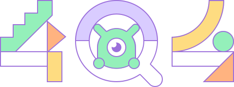
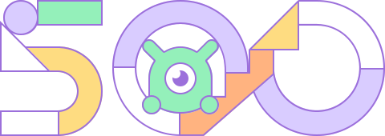

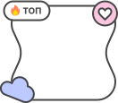
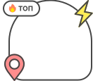
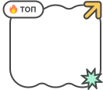
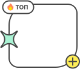
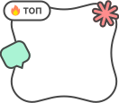
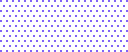


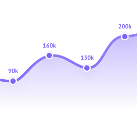
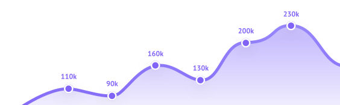
4
Действия
Кнопки Career. Одна база — base-button — и десяток надстроек поверх неё.
Анатомия
__inner → __before · __content · __afterСлоты отмечаются на корне классами has-before и has-after. Без is-sizeable не применится ни один размер.
Четыре размера
size-sm 28 · size-m 32 · size-l 40 · size-xl 48Внешние виды
appearance-*12 значений в props плюс ghost и avatar, объявленные только в CSS. Варианты branded* показаны отдельно — они зависят от цвета компании.
appearance-main
appearance-main-border
appearance-passive
appearance-danger
appearance-danger-border
appearance-success
appearance-success-border
appearance-menu
appearance-none
appearance-ghost
Брендированные варианты
appearance-branded*Переменные --color-branded-profile-* в сборке не определены: цвет подставляет страница компании во время выполнения. Ниже подставлен демонстрационный цвет, чтобы форма была видна — это НЕ цвет Career.
Иконки в кнопке
__before · __afterСостояния и полная ширина
pressed · disabled · loading · is-full-widthУдерживайте обычную кнопку, чтобы увидеть pressed. При загрузке содержимое не убирается, а гасится opacity: 0 — ширина кнопки не меняется.
Круглые кнопки
icon-button · avatar-button · pagination-buttonДиапазон кнопками
default · selected · disabledКанонический UI kit pattern. Legacy-класс button-range__button--active поддерживается, но новое состояние передаётся через aria-pressed.
Кнопка фильтра
filter-buttonСчётчик — числом или точкой. Форма чипа включается классом is-chip.
5
Формы
Поля ввода и элементы выбора. Career всегда выносит метку в отдельный компонент над полем.
Метка поля
base-input-labelМетка: размеры, обязательность, ошибка
base-input-label__title--*Однострочное поле: состояния
default · filled · readOnly · disabled · invalidСостояние хранится на нативном input; классы на wrapper остаются aliases старой Vue-реализации.
default / filled
readOnly / disabled / invalid
Многострочное поле
base-textarea + text-lengthSelect и CustomSelect
native select · select-only comboboxУ нативного Select нет управляемых open/closed states. CustomSelect использует combobox trigger и связанный listbox.
Элементы выбора и состояния
checkbox · radio · switchИсточник состояния — настоящий input. Legacy-классы сохранены как aliases; новая разметка использует checked, disabled, :indeterminate и aria-busy.
Checkbox · default / checked / indeterminate / disabled / loading
RadioButton · unchecked / checked / disabled
Switch · off / on / disabled / loading
Оценка звёздами
default · checked · compact · disabled · readOnlyИнтерактивные варианты состоят из radio inputs. Последний ряд — неинтерактивный readOnly с единым доступным именем.
Множественный выбор
editable combobox + multiselect listboxKeyboard highlight (data-active/aria-activedescendant) отделён от выбранности (aria-selected).
open / selected / active option
disabled / invalid
loading / empty
6
Метки и статусы
Чипы, счётчики и цветные метки состояния.
Чип: варианты
base-chip--default · --approved · --ghostЧип: интерактивность
--clickable · --interactive · --disabledЧип с удалением
closable-chip__closeЧип навыка
skill-chipПодтверждённый навык — вариант --approved с иконкой #check-approved и грейдом.
Метка статуса
заливка 10% от статусного цветаСчётчик непрочитанного
unread-counterБейдж
base-badge · вне сборкиОтдельного компонента в career-web нет: счётчик каждый раз собирается утилитами. Класс base-badge — запись той же геометрии, источник — Figma и замеры.
8
Отображение данных
Карточка-секция, строки, аватары, шкалы.
Карточка
:where(.base-section) — padding 24 · border 1px · radius 24Правило объявлено через :where(), поэтому любая утилита в разметке перебивает его без борьбы со специфичностью. Радиус приходит из rounded-3xl. Расхождение «16 или 24», открытое в аудите, закрыто: 24 — значение по умолчанию, 16 — вариант --padding-medium.
Заголовок карточки
Тело карточки. Кегль заголовка по умолчанию — 24/28.
Плотный вариант
padding 16 — --padding-medium.
Размеры заголовка карточки
base-section__title--size-*24 / 28 — по умолчанию
28 / 32
20 / 24
18 / 24
16 / 24
Аватары
--avatar-size · --avatar-radiusРазмер в career-web задаётся инлайновыми переменными, а не классом; шкала ниже замерена в production и записана классами для удобства. Человек — круг, компания — квадрат со скруглением 8 и рамкой в один пиксель.
Заглушки показываются, когда изображение не загружено. Те же файлы есть в продукте растром 200×200 (images/user-4ae9…png, images/medium_default-8646…png), здесь — векторные версии: на размере 140 растр уже мылит. Это единственные два файла в пакете, не извлечённые из корпуса.
Градиентное кольцо — BoosterGradientWrapper в режиме avatar: им отмечается профиль с подпиской «Бустер». Кольцо декоративное и в accessibility tree не попадает — имя всегда принадлежит вложенному аватару.
человек · заглушка
компания · заглушка
человек · бустер
Зарплатная шкала
salary-barСтрочный разделитель и метаданные
inline-separatorТочку рисует не CSS, а сам символ в разметке: <span class="inline-separator"> • </span>. Класс задаёт только цвет и white-space: pre-wrap, чтобы пробелы вокруг точки не схлопывались. Разметка взята из snapshot Career дословно.
Москва • Полный день • Можно удалённо
Длинный текст
.editor__content · 125 правилСлой оформления произвольного HTML: описание вакансии, текст компании, статья.
Чем предстоит заниматься
Разрабатывать интерфейсы продукта, участвовать в проектировании и поддерживать общую библиотеку компонентов.
- Вёрстка и логика интерфейсов
- Ревью кода
- Работа с дизайн-системой
Мы ждём внимательного инженера с опытом от трёх лет.
9
Обратная связь
Уведомления, пустые состояния, каркасы загрузки.
Информатор: четыре вида
notification--info · --attention · --news · --alertВид задаёт и заливку, и цвет рамки, и акцентный цвет иконки, крестика и ссылок — через переменную компонента --notification-accent-color. Заливка везде 10% от статусного цвета, рамка — он же в полную силу.
Иконка видом не определяется: это отдельный prop icon. Ниже показаны те, что встречаются в снятых story; у --news подтверждённой иконки нет.
Корневой класс — notification, а не base-notification: имя компонента в Storybook и имя класса в разметке различаются.
Заголовок и крестик — необязательны
title · closableОба слоя включаются props title и closable и могут отсутствовать в любом сочетании. Без заголовка описание остаётся один на один с иконкой и центрируется по ней.
Обводка зависит от места
notification--borderlessНа странице информатор идёт с рамкой — она отделяет его от фона. Встроенный в карточку, на белом, рамку снимает модификатор --borderless: заливки достаточно, а вторая рамка внутри карточки дала бы двойную обводку.
Внутри карточки
Тот же информатор без рамки:
Плотность
notification--padding-small · --padding-mediumТри ступени внутреннего отступа: по умолчанию 12/16, --padding-medium 10/16, --padding-small 8/12. Кегль не меняется.
Пустое состояние
empty-placeholderЕдиный компонент: иллюстрация, заголовок, пояснение и необязательное действие. Иллюстрации — настоящие файлы Career.
Каркас загрузки
skeleton-pulse · skeleton-shapeВсплывающее сообщение
toastify · вызывается notify()В snapshot попал только триггер: тост рендерится в портал. Оформление есть в CSS (ui/components/feedback.css), разметка не подтверждена — здесь не достраивается.
Разметка тоста не извлечена. См. components/feedback/toast.md.
10
Оверлеи
Модальные окна.
Модальное окно
base-modal__wrapper → __box → __header · __content · __footerРазмеры окна: --size-tiny · --size-small · --size-medium · --size-auto. Цвет разделителя шапки — переменная компонента --base-modal-header-border-color.
Окно подтверждения
BaseModal · короткоеОкно со списком
BaseModal + прокруткаОкно сообщения об ошибке
BaseModal11
Карточки
Единицы листингов и списков.
Карточка вакансии в листинге
вне сборки · замеры productionEntity-модуль: данные меняют состав карточки, а не создают фиктивные UI states. «Откликнуться» остаётся действием потребителя; избранное показано без сетевого запроса.
Карточка отклика
conversation-cardКарточка теста
TestItem · все исходыЛоготип компании здесь — штатная заглушка Career avatar-default-company.svg. Настоящий huntflow.svg из корпуса вынуть не удалось, и подставлять вместо него чужую графику мы не стали: заглушка — это ровно то, что продукт показывает, когда логотип не загрузился.
Строка консультации
ConsultationRecordОдиннадцать состояний процесса: заявка создана, подтверждена, завершена, отклонена, оценена — для двух ролей.
12
Баннеры
Блоки боковой колонки и полосы состояния.


Состояние фоновой операции
HHImportProfileStatusBannerТри состояния длительной операции: идёт, удалась, не удалась.
Заполнение резюме
•Резюме успешно обновлено
•Внимательно изучите новые данные в вашем профиле и проверьте, что импорт резюме прошел так, как вы ожидали.
Ошибка заполнения резюме
Не удалось подключиться к сервису hh.ru. Попробуйте позже.
Подписка и подсказки
HrNewsletterSubscription · NewNoticeРассылка для HR в IT
Аналитика по зарплатам, тренды рынка, карьерные треки и маркетинговые материалы. Пишем пару раз в месяц и только по делу.
13
Модули
Составные блоки: переписка, вложения, шаблоны, кабинет компании.
Шапка переписки
ConversationHeader
Шапка списка откликов
ConversationsSidebarHeaderФорма ответа
ConversationFormВложения
ConversationAttachedFilesПлитка файла, иконка по типу, анимация загрузки, выбор из загруженных.
Иконки типов файлов
ConversationFileIconШаблоны ответов
ConversationsTemplatesВидимость блока профиля
VisibilitySettings14
Чего не хватает
Честный список пробелов. Он не уменьшается додумыванием.
Компоненты без разметки
сломаны в самом Storybook CareerСборка Storybook Career не отдаёт два чанка — -iqz-73v.js и
-2YzXgxt.js, оба отвечают 404. Из-за этого 104 story не рендерятся. Это дефект выкладки,
а не пробел исследования.
| Компонент | Что уцелело | Чего не хватает |
|---|---|---|
| Messages · MessagesGroup · ConversationMessages | CSS (66 и 114 B), вложения, время, статус | разметка пузыря сообщения, разделителя дня, метки непрочитанных |
| ResumeCard | CSS 158 B | разметка целиком |
| ButtonRange | CSS 1785 B — геометрия и состояния | структура DOM |
| PromotionCard | CSS 2142 B — варианты и цвета | структура DOM |
| JournalBlockSidebar | ничего | разметка и CSS |
| ConversationsLayout | части (шапка, карточка, пустые состояния) | внешняя раскладка двух колонок |
| Tests: TestResultItem, TestResultAdditional, модалки результатов | все семь исходов TestItem, BaseModal | развёрнутый результат с разбором по темам |
Любой из пробелов закрывается одним snapshot соответствующей страницы production либо узлом Figma — не требуется чинить Storybook.
Состояния, живущие в порталах
- Раскрытые списки. CustomSelect, MultiSelect и контекстное меню рендерят выпадающую часть вне корня story. В snapshot попала только закрытая форма.
- Тост.
notify()рисует сообщение в портал. Есть CSS, нет разметки. - Наведение и фокус. Показаны только там, где объявлены в CSS. Статических снимков этих состояний не существует, и мы их не имитируем.
- Пять изображений из 102, встречающихся в разметке, не сохранились локально: три значка оценки, одно фото и логотип партнёра.
R4
Каркасные модули
Канонические композиции shell и контентных областей. Они используют primitives и один markup для всех ширин.
PageHeader
guest · mobile menu open/closedКнопка меню — native button с aria-expanded/aria-controls. Переключатель ниже меняет ширину только образца.
SectionHeader
section · page · actionsВакансии компании
Открытые позиции
12 вакансий для разработчиков и аналитиков
Работа и вакансии
Найдено 1 272 вакансии
Sidebar + SidebarSection
300px · sticky · stack/hiddenFilterPanel + FilterModal
default · open/closed · loadingНа desktop тот же FilterPanel находится в Sidebar, на узкой ширине — внутри modal adapter. Поля сохраняют общую model value.
Интерактивный пример: Tab удерживается внутри, Escape закрывает окно и возвращает фокус.
Loading: значения остаются видимыми, fieldset и действия временно заблокированы.
Фильтры вакансий
R2-E
Нормативные контракты primitives
Примитивы не получают выдуманные интерактивные состояния; семантика принадлежит содержимому и управляющим элементам.
Loading: Loader и Skeleton
aria-busy · aria-hiddenЗагружаемая область сообщает состояние, визуальный индикатор остаётся декоративным.
CollapsedContent
collapsed · expandedPrettyScroll и декоративные primitives
keyboard scroll · aria-hiddenМоскваУдалённо
TransitionFade
motion, не UI stateOpacity не управляет доступностью: закрытый контент одновременно скрывается или размонтируется. Reduced motion сокращает переход.
Стабильные display roots
StatusChip · UnreadCounterЦвет StatusChip всегда продублирован текстом; UnreadCounter визуально ограничен 99+, но сообщает точное число.
R2-D
Нормативные состояния коллекций и оверлеев
Стабильные классы и ARIA-контракты для нового кода. Старые Storybook-снимки выше сохранены как evidence.
Row
default · selected · disabledChip: три разные роли
span · button · button[aria-pressed]SegmentedTabs
nav · aria-currentToast
info · success · warning · errorDropdownModal и Modal
open · closed · loadingОткрытый адаптер синхронизирует aria-expanded триггера и aria-hidden попапа. В dialog-режиме добавляются focus trap, Escape и возврат фокуса.
aria-busy="true", содержимое остаётся доступно для чтения.